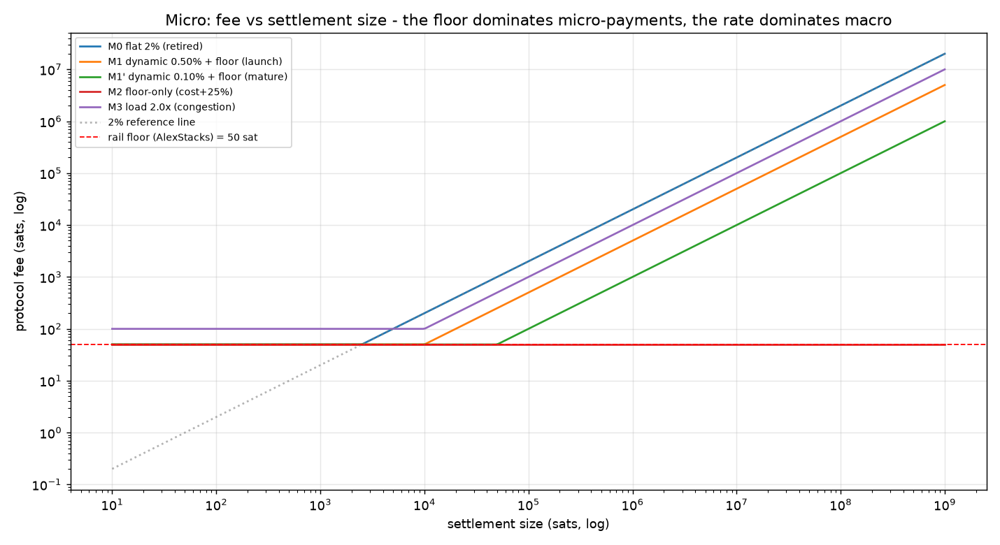
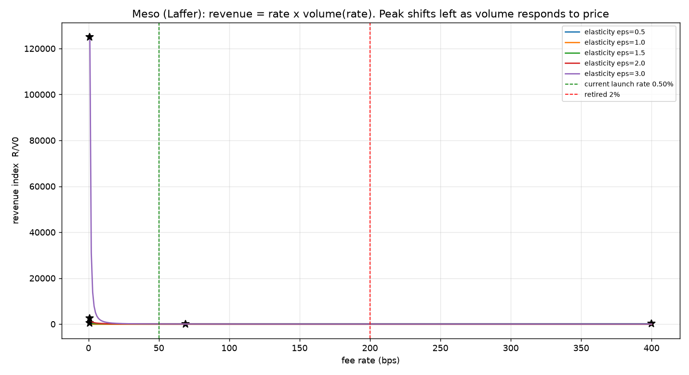
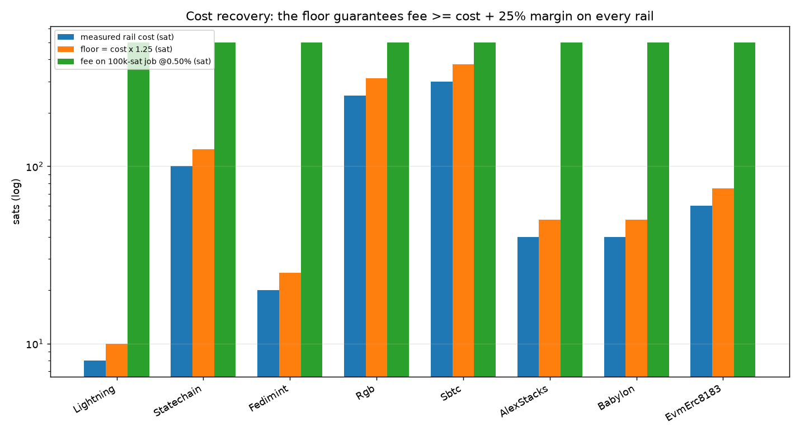
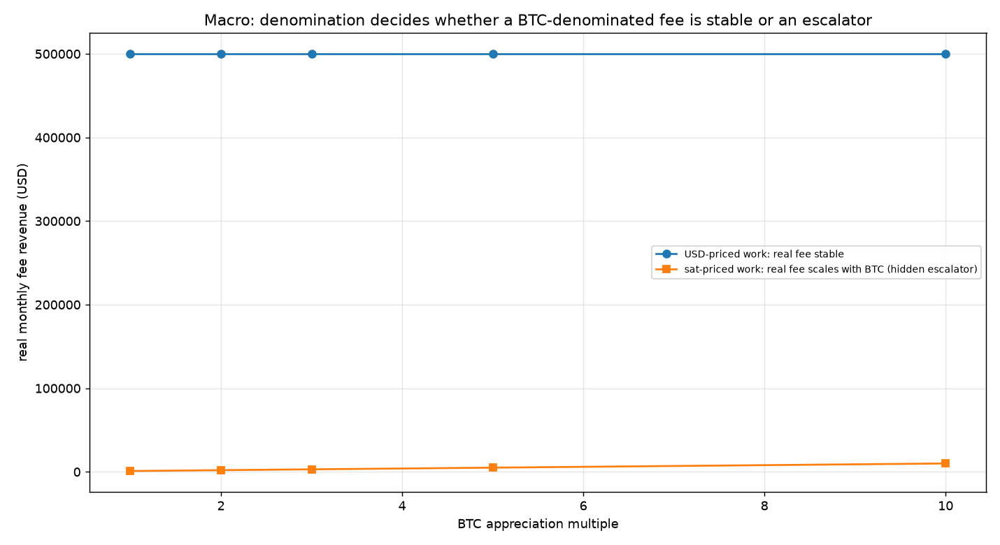
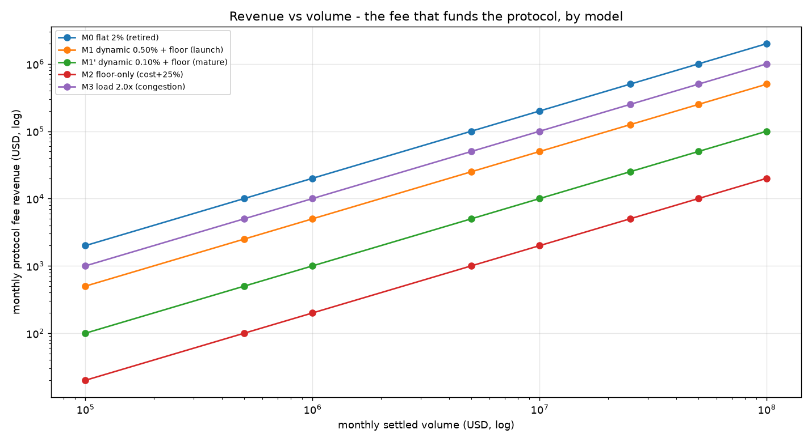

The decision that changes everything (D-1)
Two documented split bases, juxtaposed on a 1,000,000-sat settlement at 0.50%.
| Bucket | A: 50/30/20 on fee F | B: on 10%-of-net | Ratio |
|---|---|---|---|
| Operations | 2,500 | 49,750 | 19.9× |
| Founders | 1,500 | 29,850 | 19.9× |
| Ecosystem (fee leg) | 1,000 | 19,900 | 19.9× |
Option A keeps the effective protocol take at ~0.50% of gross. Option B implies ~10% of net — larger than Stripe, and almost certainly not the intent.
Micro: fee vs settlement size
The floor dominates micro-payments; the rate dominates macro. Crossover where amount×0.005 = rail floor.

Effective rate vs size
High effective rate on micro-payments (floor doing its job); settles to headline rate on large ones.

Meso: Laffer curve
Revenue = rate × volume(rate). At elasticity ε≥1.5 the percentage optimum collapses toward zero.

Cost recovery floor
Every rail: fee ≥ cost × 1.25. The 'never subsidise a client' invariant.

Scaling economics
Network value ∝ n²; revenue ∝ n. Capture ratio falls as 1/n → rates must decline.

Macro: BTC denomination
USD-priced work: stable real fee. Sat-priced work: hidden escalator.

Revenue vs volume
The fee that funds the protocol, by model variant.

Full system: one settlement
Where a 1,000,000-sat settlement goes across market, gateway, vault, platform.

Decision D-1: split basis
50/30/20 on fee F vs on 10%-of-net slice: a ~20× difference.